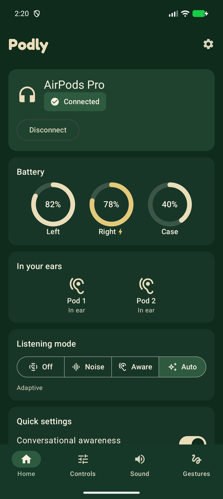
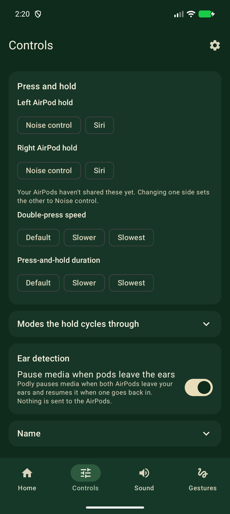
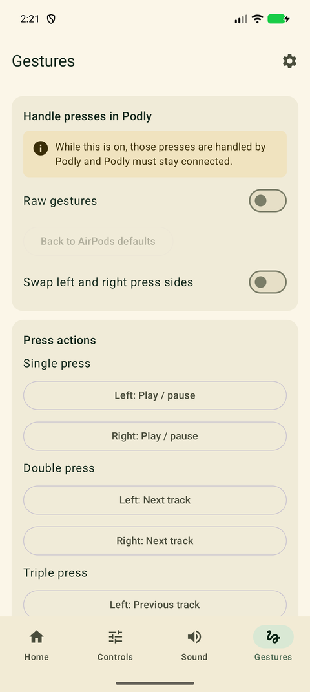
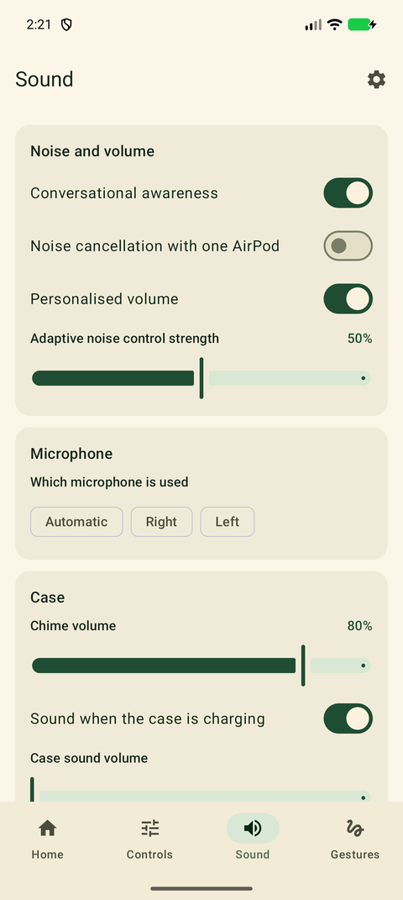

Your AirPods, with more control on Android.
Podly shows battery and ear status, switches listening modes, lets you choose what a press does, and pauses your music when you take a pod out. It works on your phone only: no account, no ads, no internet.

What it does
Battery and ear status
See left, right and case battery, and whether each pod is in your ear.
Listening modes
Switch between Off, Noise cancellation, Transparency and Adaptive from your phone or the notification.
Press actions
Choose what a single, double, triple or long press does on each pod, such as play/pause, next, previous or cycling modes.
Pause when you take them out
Media pauses when a pod leaves your ear and resumes when it returns. Music you paused yourself stays paused.
Auto-connect
Podly connects when your AirPods do, so it is ready without opening the app.
Private by design
No internet permission, no analytics and no ads. Settings never leave your phone.
A look inside



Questions
Which phones and AirPods does it work with?
Podly needs Android 16 or newer and Bluetooth. It was developed and tested with AirPods Pro on a Pixel phone. Some features depend on your AirPods model and firmware, so results can vary.
Does it need root or an account?
No. It does not need root access and has no sign-in.
Does Podly use the internet or collect data?
No. It has no internet permission and no analytics or ads. See the privacy policy.
Why does it ask for Nearby devices and notifications?
Nearby devices lets it talk to your paired AirPods. Notifications show the ongoing connection card with battery and listening-mode buttons.
Something is not working. Who do I contact?
Email nikhilkumarreddypyreddy@gmail.com with your phone model and Android version.